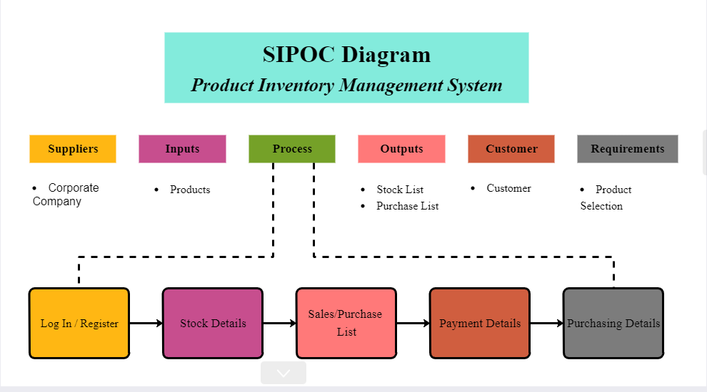

This Product inventory is used to record information about the amount of available goods and products your company offers. Start by entering a product’s code, product's name, Quantity, unit price. This simple product inventory can help those people who cannot manage their stocks. It is so much safe because you can access it by yourself and you can access and edit important inventory data anywhere, anytime even without internet access.
It shows the concept map of our proposed project Product Inventory Management System which represents the visual representations and relationships between each concept and information.

It shows the SIPOC (Suppliers, Inputs, Process, Outputs, and Customers) Diagram of our proposed project Product Inventory Management System which is showing the process of documentation, inputs, process, outputs, and customers. It also visualizes how everyone in the process receives materials or data from each other, and is often used to improve and understand processes that impact customer experience.
Created By: Bautista, Mel Denzel | Borres, Zyrenn Rose | Escaro, Darwin